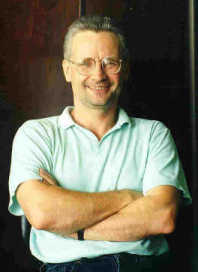

People  Oleg
Lvovich Polyansky Oleg
Lvovich Polyansky
Oleg Lvovich Polyansky
E-mail: o.polyansky@ucl.ac.uk
Tel: +7 (831) 416-49-32
|  |
Oleg Polyansky was born in 1957 in Gorky (now called Nizhny Novgorod). He received his diploma degree in radiophysics from the Gorky State University, USSR (1979). The same year he became a junior research fellow at the Institute of Applied Physics of the Russian Academy of Science (USSR at that time). His PhD work was done at this Institute and defended at Tomsk University in 1993. By that time he was a senior research fellow of the same institute. After receiving his PhD he won the Humboldt fellowship, which he spent with Prof. Manfred Winnewisser and Prof. Per Jensen in Giessen, Germany. In 1995 he took a postdoc position at University College London with Prof. Jonathan Tennyson. He spent the years 2004 to 2006 as a researcher at Ulm University, Germany, and the years up to 2008 as a visiting professor at UCL. At the moment he is a group leader, leading research fellow and scientific supervisor of PhD students in his home town at the Institute of Applied Physics.
|
His research interests are in the development and application of methods for the high precision calculation of the spectra of small molecules and ions, and analysis of their spectra at high excitation, including high temperatures and dissociation.
He has more than 100 papers in the refereed journals, including Science (first author in two Science papers), Physical Review, Physical Review Letters, Journal of Chemical Physics, Chemical Physics Letters. In 2015 citation index of his publications was 4002 citations, average 33 per paper; Hirsch factor is 38.
Theoretical group activity
Plenary lectures
|